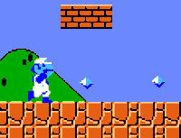
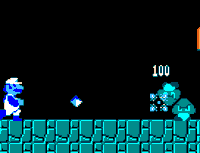

The Adventures of Ice Mario

The Adventures of Ice Mario
|
|
This patch for Super Mario Bros. will replace all the traditional Fire Flowers with Ice Flowers! Collect one and Mario will transform into a frosty fiend with the ability to toss chilling ice crystals. Put those nasty koopas on ice once and for all! Many, many thanks to Quor for his debugging work to alter the fireballs' behavior, and to Dom for the additional graphic work. This patch wouldn't exist without your efforts! |  |
|  | |
| Please consult the Guide to IPS Patches or the document included in the archive for help in using this patch. |
| Copyright © 1997-1999 Jay McGavren. All Rights Reserved. |